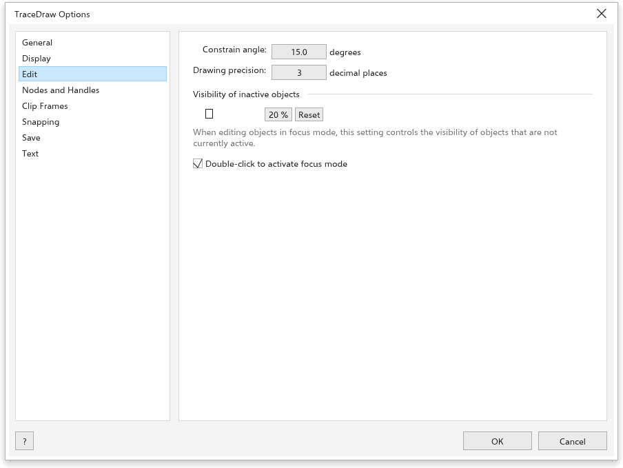
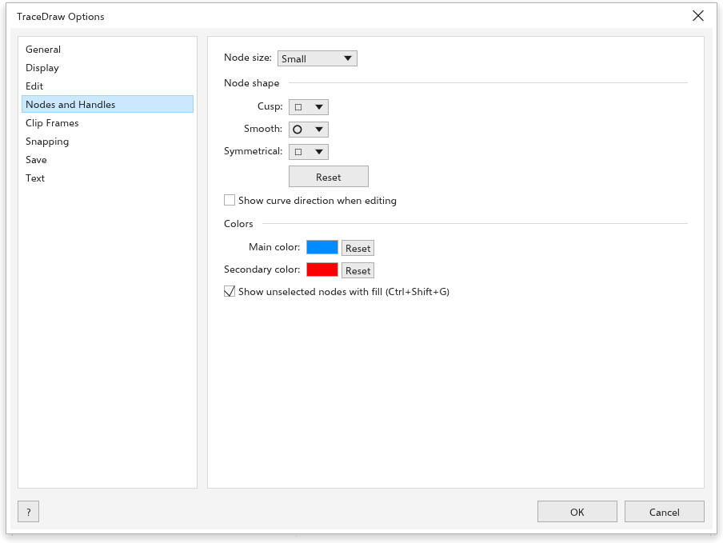

TraceDraw seçenekleri
Araçlar > Seçenekler > TraceDraw (Ctrl+J) programın nasıl çalışacağını ayarlar. Soldaki listeden bir sayfa seçin.
Genel

- {app} başlatıldığında: Karşılama Ekranını göster, yeni bir belge başlat veya son düzenlenen belgeyi aç.
- Yeni Belge iletişim kutusunu göster (açık): yeni bir çizimin ayarlarını sor; bkz. Çizim oluşturma.
- Başlangıçta açılış ekranını göster (açık).
- Use hardware acceleration (açık): pencere yanında seçilen ekran kartıyla çizilir (başta Fastest available); kapalıyken bilgisayarın yazılım oluşturucusuyla. Bir sonraki açılışta geçerli olur. Pencere böyle açılamazsa TraceDraw yazılım oluşturucuyla, ardından OpenGL ile yeniden başlar ve çalışanı hatırlar.
- Geri alma düzeyleri: kaç adımı geri alabileceğiniz (başlangıçta 150).
Ekran

- Prova Renkleri: renkleri basılacakları gibi göster.
- Araç ipuçlarını göster (açık), Eğri araçlarında sınırlayıcı kutuyu gizle ve Düğüm izlemeyi etkinleştir (kapalı: açıkken Seçim aracı seçili bir eğrinin düğümlerini sürükleyebilir).
- Tam ekran önizleme: Sayfa kenarlığını göster.
- Fare tekerleği için varsayılan eylem: Yakınlaştır (başlangıçta) veya Kaydır.
- Cetvel kalibrasyonu: ekrana bir cetvel tutun ve işaretler eşleşene kadar Ekran çözünürlüğü değerini değiştirin; böylece %100 yakınlaştırma gerçek boyutları gösterir. Sıfırla 96 değerine geri döndürür.
Düzen

- Kısıtlama açısı: döndürürken ve çizerken Ctrl tuşunun adımı (başlangıçta 15 derece).
- Çizim hassasiyeti: özellik çubuğundaki ve durum çubuğundaki ondalık basamak sayısı (başlangıçta 3).
- Visibility of inactive objects (başlangıçta %20) ve Double-click to activate focus mode; bkz. Odak modu.
Düğümler ve Tutamaçlar

- Düğüm boyutu: küçük, orta veya büyük.
- Sivri, Düzgün ve Simetrik düğümler için Düğüm şekli.
- Düzenlerken eğri yönünü göster.
- Renkler: seçili düğümlerin ve tutamaçların Ana renk öğesi ve İkincil renk.
- Seçili olmayan düğümleri dolgulu göster (Ctrl+Shift+G).
Kırpma Çerçevesi

- Yeni içeriği otomatik ortala: İçerik tamamen çerçevenin dışındayken (başlangıçta), Her zaman veya Hiçbir zaman.
- Boş kırpma çerçevelerinde çizgileri göster (açık).
Bkz. Nesneleri bir çerçevenin içine yerleştirme.
Yakalama

- Nesnelere yapıştır (Alt+Z), Sayfaya yapıştır, Kılavuz çizgilerine yapıştır, Izgaraya yapıştır, taban çizgisi ızgarası ve Piksellere yapıştır.
- Yapıştırma yarıçapı (başlangıçta 10 piksel).
- Yapıştırma konumu işaretlerini göster ve Ekran ipucu.
- Modlar: nesnelerin yakalandığı noktalar, Tümünü Seç ve Tüm Seçimi Kaldır ile birlikte.
Bkz. Yakalama.
Kaydet

- Yedekleme: Kaydetmeden önce orijinal dosyayı yedekle (açık) önceki dosyayı
backup_of_<name>olarak tutar; Yedekleme konumu Orijinal dosyayla aynı klasör veya seçilen bir yer. - Otomatik yedekleme (açık): Yedekleme sıklığı 20 dakika, geçici bir klasöre veya seçilen bir yere. Bir çökmeden sonra yedekler önerilir; bkz. Otomatik yedekleme ve kurtarma.
Metin

Sayfada beş sekme vardır.
- Ekran: Klavyeyle metin artışı (Ctrl+8 ve Ctrl+2 seçili metni ne kadar büyütüp küçültür, 1 punto), yeni metnin Varsayılan yazı tipi ve Varsayılan boyut değerleri ve Yazdırılmayan Karakterleri Göster.
- Paragraph Text: Metin Çerçevelerini Göster, Heceleme Kullan ve Hyphenation patterns (yerleşik ya da dilinize ait bir heceleme sözlüğü).
- Yazı tipleri: yazı tipi listelerinin başında Show recently used fonts, Number of recently used fonts (5, en çok 20) ve Font sample size.
- Spelling: Rakam içeren sözcükleri yok say, Büyük harfli sözcükleri yok say ve Add corrections to Autocorrect; yazım denetiminde düzelttiğiniz bir sözcük bir dahaki sefere yazarken düzeltilir; ve kullandığı Dictionaries, bkz. Sözlükler.
- Otomatik Düzeltme: yazarken neyin düzeltildiği; bkz. Otomatik Düzelt.